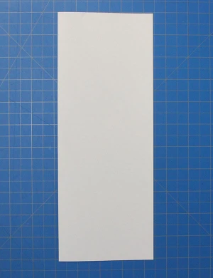
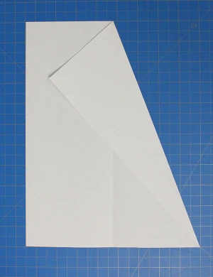
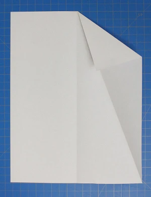
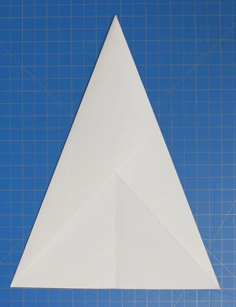
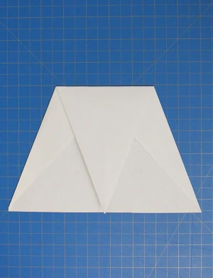
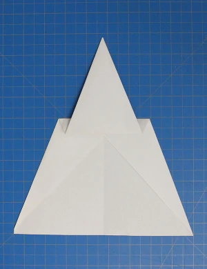
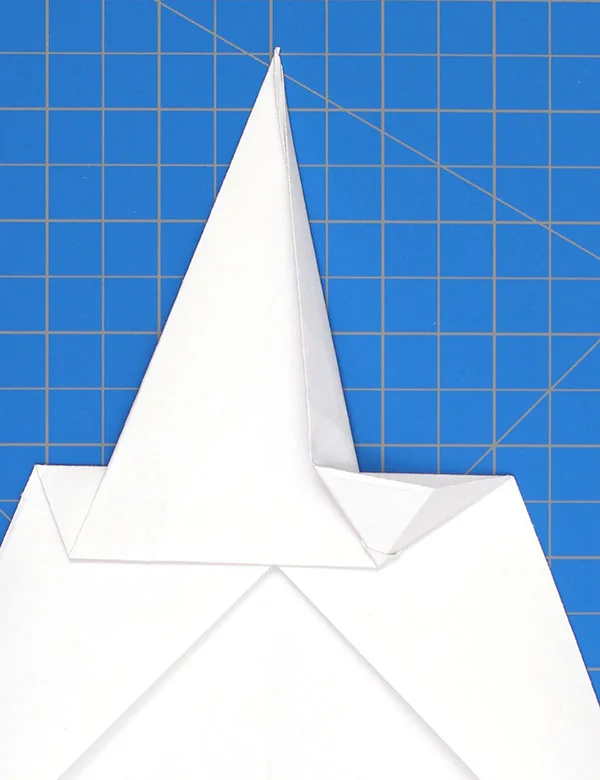
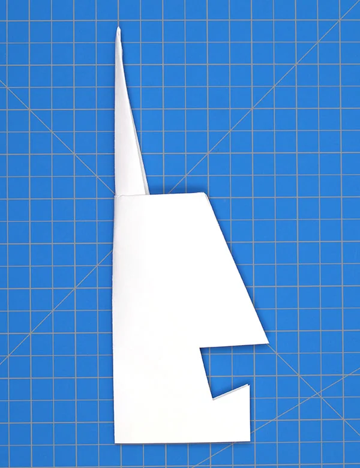

1Step 1
Crease the sheet in half, then open it flat again.

Crease the sheet in half, then open it flat again.

Crease from the top centre down to the bottom-right corner, then open it.

Fold the right corner down to the previous crease, then remake the step-2 fold.

Repeat steps two and three on the left side.

Fold the tip straight down to the bottom edge.

Fold the tip back up as shown — the doubled band should be just under 1 inch (2.5 cm).

Fold the plane in half and then temporarily unfold as shown in the guide.

Fold in the right side of the top part of the airplane. At the same time, push up and flatten the small triangle piece as shown in the guide.

Repeat the last step with the left side and then fold the airplane in half as shown in the guide.

Hold the wings together and cut out a piece to make the shape above. Download our printable instructions for an easy template as shown in the guide.

Refold the body and fold out the wings as shown in the guide.

Finally, cut some tail fins to make fine adjustments to the flight as shown in the guide.
With a calm day and a level throw, expect roughly 14–19 metres (about 46–62 feet). Among the 37 distance-rated designs in this collection it ranks #12. Wind, paper weight, and small crease errors all change the result.
A well-trimmed Needle Dart should hold about 3–4 seconds of hang time. That places it #31 of 36 designs for time aloft. Launching from a higher spot and keeping the wings level will extend it.
It is best for far, straight throws. Folding skill is master. Use Letter & A4, 12 steps, needs a cut.
Hold the plane level and throw with a smooth, firm push, aiming straight ahead rather than upward.